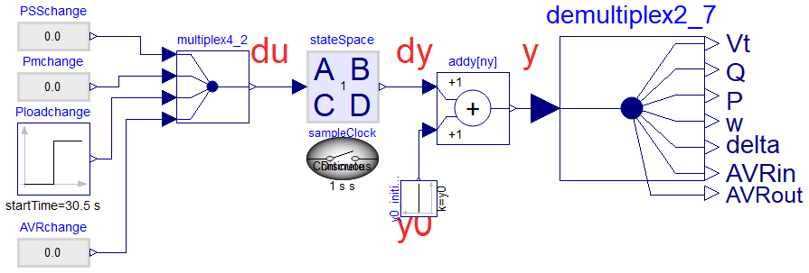

These models are not to be used for any purpose other than presenting figures in documentation.
Information
Contains models whose visual appearance has been modified for documentation or publications.
Do not use for simulation purposes.
Extends from Modelica.Icons.InternalPackage (Icon for an internal package (indicating that the package should not be directly utilized by user)).
Package Content
| Name |
Description |
| LinearModelGeneral
|
These models are not to be used for any purpose other than presenting figures in documentation. |
These models are not to be used for any purpose other than presenting figures in documentation.

Information
Contains models whose visual appearance has been modified for documentation or publications.
Do not use for simulation purposes.
Extends from Example1.Utilities.Icons.FunctionDependentExample (f+m = for this model, a function drives the simulation of the model).
Parameters
| Type | Name | Default | Description |
|---|
| Real | y0[:] | vector(DataFiles.readMATmatr... | |
| StateSpace | ss | StateSpace.Import.fromFile("... | |
| Integer | ny | size(ss.C, 1) | |
Modelica definition
model LinearModelGeneral
extends Example1.Utilities.Icons.FunctionDependentExample;
parameter Real[:] y0=
vector(
DataFiles.readMATmatrix("MyData.mat", "y0_beforedist"));
import Modelica_LinearSystems2.StateSpace;
parameter StateSpace ss=
StateSpace.Import.fromFile("MyData.mat", "ABCD");
parameter Integer ny=
size(ss.C, 1);
inner Modelica_LinearSystems2.Controller.SampleClock sampleClock;
Modelica.Blocks.Routing.Multiplex4 multiplex4_2(n1=1, n2=1);
Example1.CustomComponents.DeMultiplex7 demultiplex2_7;
Modelica.Blocks.Math.Add addy[ny];
Modelica.Blocks.Sources.Constant y0_initial[ny](k=y0);
Modelica_LinearSystems2.Controller.StateSpace stateSpace(system=ss);
Modelica.Blocks.Sources.RealExpression
PSSchange;
Modelica.Blocks.Sources.RealExpression
Pmchange;
Modelica.Blocks.Sources.Step Ploadchange(
height=0.1,
offset=0,
startTime=30.5);
Modelica.Blocks.Sources.RealExpression
AVRchange;
equation
connect(addy.y,demultiplex2_7. u);
connect(Pmchange.y,multiplex4_2. u2[1]);
connect(y0_initial.y, addy.u2);
connect(multiplex4_2.y, stateSpace.u);
connect(stateSpace.y, addy.u1);
connect(PSSchange.y,multiplex4_2. u1[1]);
connect(Ploadchange.y,multiplex4_2. u3[1]);
connect(AVRchange.y, multiplex4_2.u4[1]);
end LinearModelGeneral;
Automatically generated Fri Mar 8 12:46:09 2024.